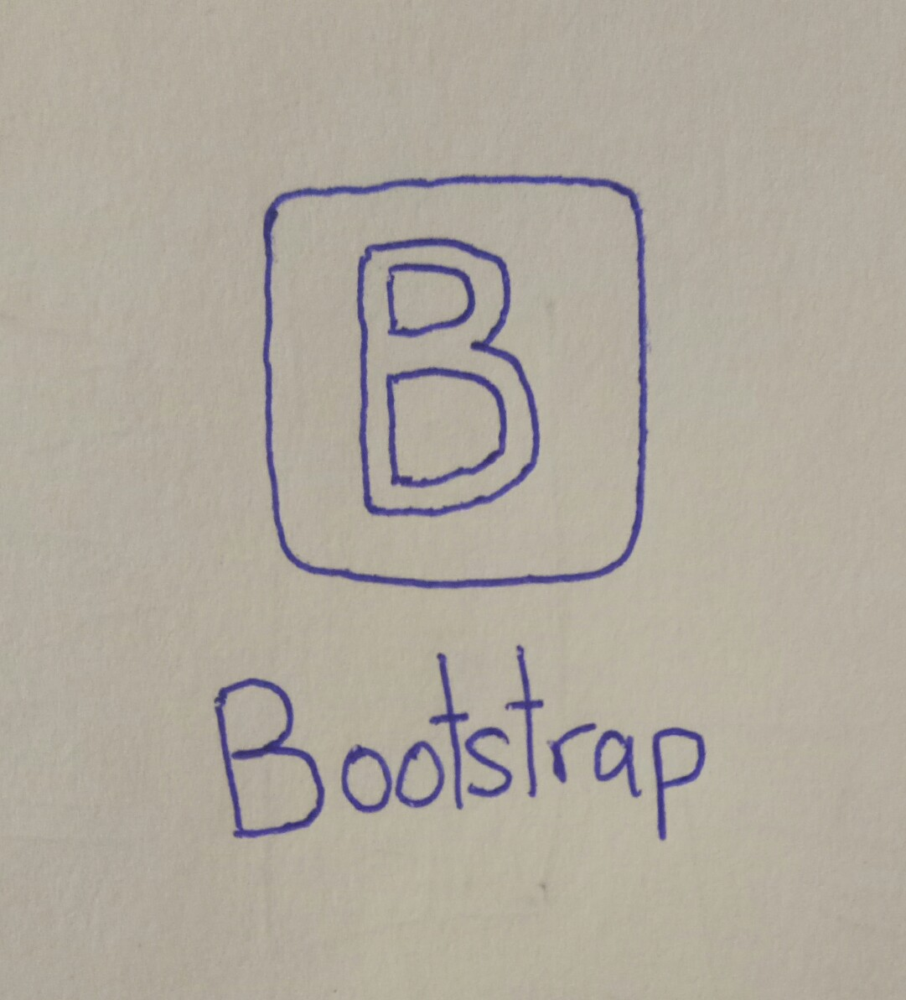

Codes readability can present ability of software developer. When needs to maintain websites or software, but codes difficult to understand, this will delay work progress and waste man power, money and time.
In my opinion, the best modern coding guides for web pages development is W3schools. In W3schools have more language can learn and it is a reliable website. The explanation inside the W3schools very detailed and can try the codes in W3schools. W3schools have a fixed sidebar and search function to convenient find codes.
My favourites coding guide is W3schools, because in W3schools have more coding guide, easy learn, have detail explanation, can write code in W3schools tool. W3schools have more language can learn in a website, can no need waste more time to search reliable website.
Inspect is a good debug and most convenient debug tools, because Inspect have in browser. We can use Inspect to find error, debug, check and testing codes. This can make software developer easy debug and check their codes have any problem and directly testing codes and see the result on browser.
Github is a version control tools for software developer to solve team collaboration problem. Github is the best platform to let software developer can combine codes, especially in big project, every software developer hold on different part of software, when need combine codes with version control will omission more combine codes time and debug time. Version control can save different version, compare and make development history.
Bootstrap is a css framework, it is a free and open source design website and application. Inside css framework have a set of icon, button, grid system, animation effect and more function. CSS framework is a type of pre-prepare design software, it can easy and faster to complete design website, make website beautiful at the same time.
